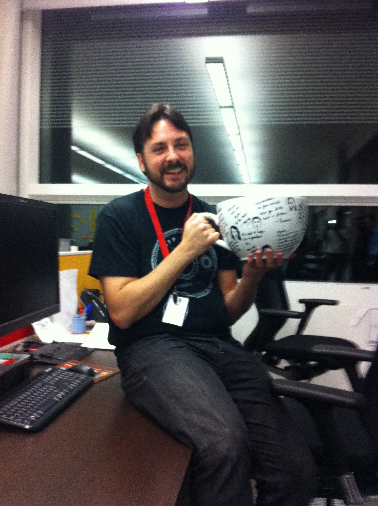

So long, and thanks for all the fish.

Friday was my last day at Hotels.com, I’m leaving for a new contract at the BBC.
I have been working there for nearly a year and have enjoyed my time immensely. I have made some really good friends and greatly improved my understanding of software development practices, and I put that down to the great working environment and the skill and patience of my colleagues.
My team bought me the most amazing leaving present ever, THE BIGGEST MUG IN THE WORLD, which they all signed. Thanks all :)
